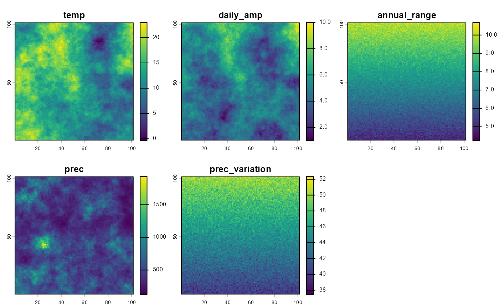
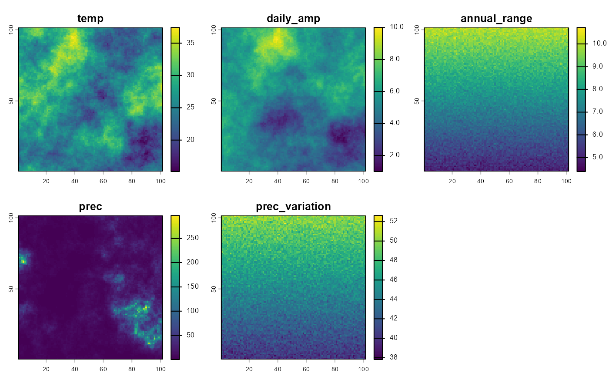
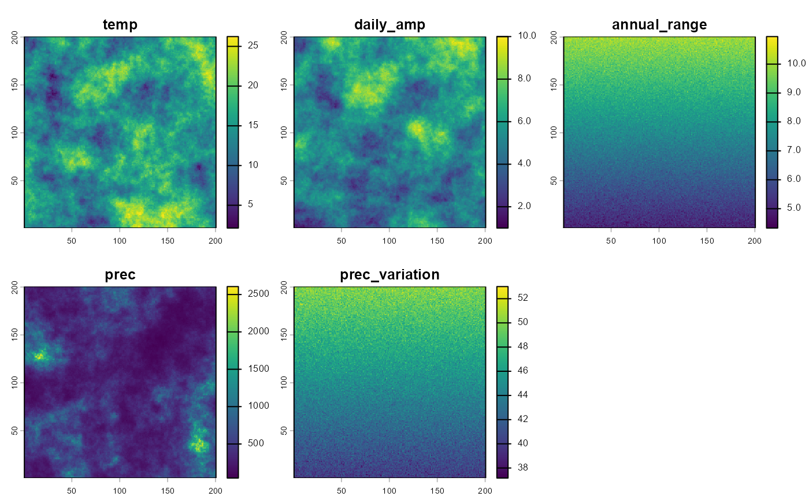

generateClim.RdFunction to generate base climate data using Gaussian simulations with a Spherical model. The temperature data adheres to a normal distribution, while precipitation follows a lognormal distribution with user-defined parameters, and both variables are treated as independent. Daily precipitation amplitude covaries with latitude and temperature data. Temperature annual range and precipitation annual variation are determined by the latitudinal gradient with the addition of a normal error.
generateClim(nrow = 101, ncol = 101, Tmean = 15, Tsd = 4, Trange = 45,
Tamp_max = 10, Tamp_min = 1, Tar_max = 10, Tar_min = 5,
Pmean = 500, Psd = 300, Prange = 45, Pav_max = 50, Pav_min = 10)Row number of the grid to be created.
Column number of the grid to be created.
Mean temperature of the distribution.
Standard deviation for temperature distribution.
Range for the spatial autocorrelation spherical model.
Maximum daily amplitude for temperature.
Minimum daily amplitude for temperature.
Maximum value for temperature annual range.
Minimum value for temperature annual range.
Mean value for precipitation distribution.
Standard deviation value for precipitation distribution.
Range for the spatial autocorrelation model.
Maximum value for precipitation annual variation.
Minimum value for precipitation annual variation.
Returns a list with generated grid coordinates and temperature, precipitation, daily temperature amplitude and temperature annual range and precipitation annual variation for each cell. Coordinates are always in the range [0,1].
set.seed(1234)
# With default parameters
clim <- generateClim()
#> [using unconditional Gaussian simulation]
#> [using unconditional Gaussian simulation]
#> [using unconditional Gaussian simulation]
clim.rst <- rast(clim)
plot(clim.rst)

# Higher temperature, low precipitation
clim2 <- generateClim(Tmean=24, Pmean=25, Psd=50)
#> [using unconditional Gaussian simulation]
#> [using unconditional Gaussian simulation]
#> [using unconditional Gaussian simulation]
clim2.rst <- rast(clim2)
plot(clim2.rst)

# Higher spatial resolution
clim3 <- generateClim(200, 200)
#> [using unconditional Gaussian simulation]
#> [using unconditional Gaussian simulation]
#> [using unconditional Gaussian simulation]
clim3.rst <- rast(clim3)
plot(clim3.rst)
